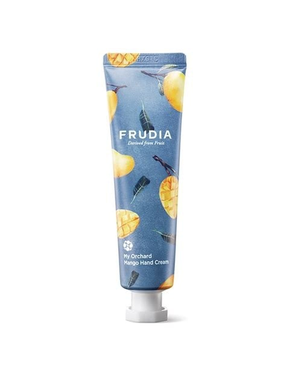
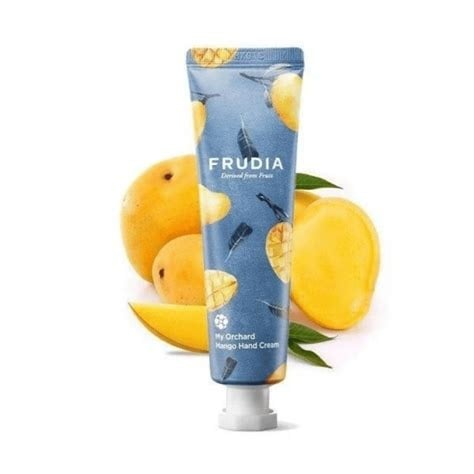

<div> <table style="border-collapse: collapse; width: 99.9809%;" border="1"><colgroup><col style="width: 49.9522%;"><col style="width: 49.9522%;"></colgroup> <tbody> <tr> <td> <div><span style="font-size: 14pt;"><strong>Frudia My Orchard Crema de maini cu mango, 30g</strong></span></div> <div><span style="font-size: 14pt;">Crema de m&acirc;ini Frudia My Orchard Mango aduce răsfățul tropical direct &icirc;n ritualul tău de &icirc;ngrijire. &Icirc;mpachetată &icirc;ntr-un tub modern cu ilustrații vibrante, această cremă infuzează pielea cu extract bogat de mango obținut prin presare la rece, oferind o hidratare intensă și un parfum fructat irezistibil.</span></div> </td> <td></td> </tr> <tr> <td></td> <td><span style="font-size: 14pt;">O infuzie pură de vitamine, direct din livadă pe pielea ta. &Icirc;mbogățită cu extract de mango zemos și nutrienți esențiali, această cremă cu absorbție rapidă acționează ca un scut protector &icirc;mpotriva deshidratării, red&acirc;nd instantaneu catifelarea și elasticitatea m&acirc;inilor aspre sau afectate de factorii de mediu.</span></td> </tr> <tr> <td><span style="font-size: 14pt;">Secretul eficienței Frudia constă &icirc;n tehnologia patentată R VITA W. Acest proces unic de extracție la rece păstrează intacte vitaminele și nutrienții din fructe, fără distrugere termică. Filtrată riguros, formula oferă pielii tale un suc de fructe 100% real pentru o terapie naturală ultra-hrănitoare.</span></td> <td></td> </tr> <tr> <td></td> <td><span style="font-size: 14pt;">O cremă terapeutică suculentă concepută pentru trei nevoi majore: salvează m&acirc;inile extrem de uscate și aspre, repară pielea afectată de muncă fizică, apă sau detergenți și &icirc;mbunătățește elasticitatea pielii ridate. Tratamentul ideal care redă instantaneu finețea și aspectul t&acirc;năr al m&acirc;inilor delicate.</span></td> </tr> </tbody> </table> </div>